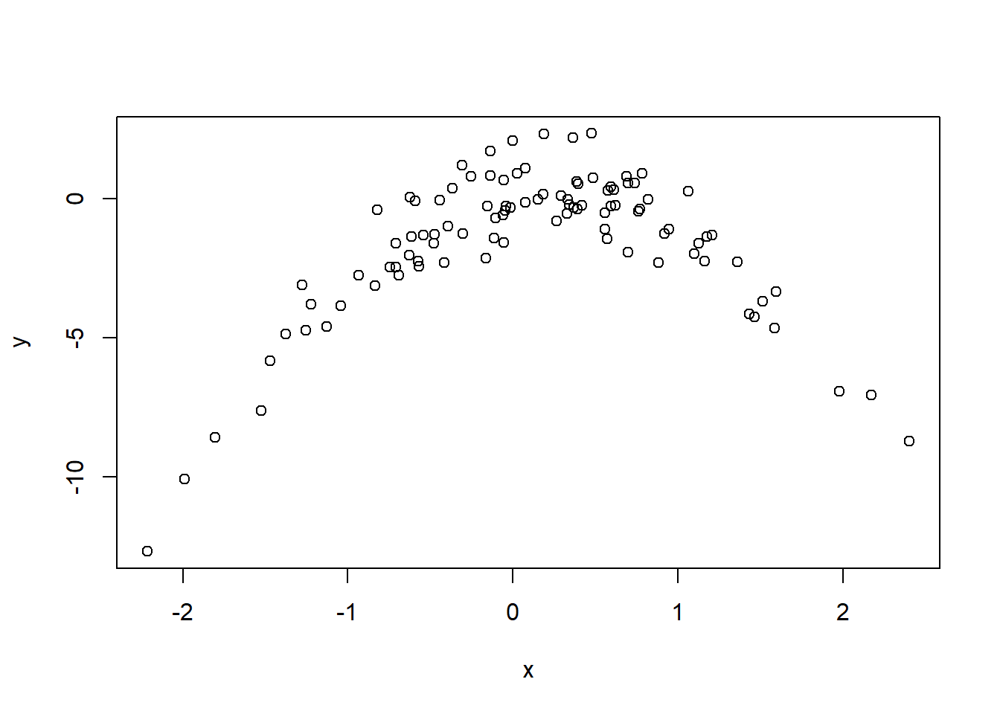

For this question, we need to find the value of \(\alpha\) which minimizes the expression: \[
\begin{aligned}
Total \ Variance &= Var(\alpha X + (1-\alpha) Y) \\
&= Var(\alpha X) + Var((1-\alpha)Y) + 2.Cov(\alpha X, (1-\alpha)Y) \\
&= \alpha^2Var(X) + (1-\alpha)^2Var(Y) + 2Cov(X,Y)(\alpha(1-\alpha)) \\
&= \alpha^2 \sigma_X^2 + (1-\alpha)^2 \sigma_Y^2 + 2 \sigma_{XY}(\alpha(1-\alpha)) \\
\end{aligned}
\]
Now, to find the value of \(\alpha\) which minimizes this total variance, we take it’s first partial derivative with respect to \(\alpha\) and set it equal to zero:–
Further, to verify that the first partial derivative is indeed the minimum value of Variance, we find the second partial derivative with respect to \(\alpha\) and see whether it is zero or not.
Now, the variance of any variable is always positive. Hence, the expression \(2Var(X-Y)\) will always be positive. Thus, we can confirm that the minimum value is at the first partial derivative. Equation 5.6 is thus proved.
Question 2
We will now derive the probability that a given observation is part of a bootstrap sample. Suppose that we obtain a bootstrap sample from a set of n observations.
(a)
What is the probability that the first bootstrap observation is not the jth observation from the original sample? Justify your answer.
The bootstrap method samples each bootstrap observation from the original sample randomly with replacement. Thus, for each bootstrap observation, every value in the original sample has an equal probability of being selected. This probability is simply \(^1/_n\). So, the probability that first bootstrap observation is the \(j^{th}\) observation from the original sample is \(^1/_n\). Finally, the probability that first bootstrap observation is not the \(j^{th}\) observation from original sample is \(1 - (^1/_n)\).
(b)
What is the probability that the second bootstrap observation is not the jth observation from the original sample?
As answered earlier, the bootstrap method samples each bootstrap observation from the original sample randomly with replacement. Thus, for each and every bootstrap observation, every value in the original sample has an equal probability of being selected. This probability is simply \(^1/_n\).
So, the probability that second (or, in fact any \(k^{th}\)) bootstrap observation is the \(j^{th}\) observation from the original sample is \(^1/_n\). Finally, the probability that the second bootstrap observation is not the \(j^{th}\) observation from original sample is \(1 - (^1/_n)\).
(c)
Argue that the probability that the jth observation is not in the bootstrap sample is\((1 − 1/n)^n\).
Since the bootstrap method samples each observation as a random sample (with replacement) from the original sample, it can be said that each bootstrap sample is an independent random variable. Now, the probability of joint occurrence of independent events (in this case, not selecting the \(j^{th}\) observation of original sample) \(n\) different times is: \[
\begin{aligned}
Probability &= Pr_1 \times Pr_2 \times Pr_3 \times \ ... \times \ Pr_n \\
&= (1 - \ ^1/_n) \ \times \ (1 - \ ^1/_n) \ \times \ (1 - \ ^1/_n) \ \times \ ... \ (1 - \ ^1/_n) \\
&= (1 - \ ^1/_n)^n
\end{aligned}
\]
(d)
When n = 5, what is the probability that the jth observation is in the bootstrap sample?
The probability of the \(j^{th}\) observation being in the bootstrap sample is (1 - probability of \(j^{th}\) observation being not in the boostrap sample). For \(n=5\), this is 0.672. \[
\begin{aligned}
Probability &= 1- (1 - \ ^1/_n)^n \\
&= 1 - (1-0.2)^5 \\
&= 1 - 0.8^5 \\
&= 0.672
\end{aligned}
\]
(e)
When n = 100, what is the probability that the jth observation is in the bootstrap sample?
The probability of the \(j^{th}\) observation being in the bootstrap sample is (1 - probability of \(j^{th}\) observation being not in the bootstrap sample). For \(n=100\), this is 0.634. \[
\begin{aligned}
Probability &= 1- (1 - \ ^1/_n)^n \\
&= 1 - (1-0.01)^{100} \\
&= 1 - 0.99^{100} \\
&= 0.634
\end{aligned}
\]
(f)
When n = 10, 000, what is the probability that the jth observation is in the bootstrap sample?
As calculated above, the probability of the \(j^{th}\) observation being in the bootstrap sample is (1 - probability of \(j^{th}\) observation being not in the bootstrap sample). For \(n=10000\), this is 0.632. \[
\begin{aligned}
Probability &= 1- (1 - \ ^1/_n)^n \\
&= 1 - (1-0.0001)^{10000} \\
&= 1 - 0.9999^{10000} \\
&= 0.632
\end{aligned}
\]
(g)
Create a plot that displays, for each integer value of n from 1 to 100, 000, the probability that the jth observation is in the bootstrap sample. Comment on what you observe.
We can use the formula derived above to create such a plot in R. The code and output is shown below. We observe that as \(n \to \infty\), the value of this probability approaches an asymptote of approximately 0.632.
n <-1:100000Pr <-1- (1-1/ n)^nplot(n, Pr)library(ggplot2)
We will now investigate numerically the probability that a bootstrap sample of size n = 100 contains the jth observation. Here j = 4. We repeatedly create bootstrap samples, and each time we record whether or not the fourth observation is contained in the bootstrap sample. Comment on the results obtained.
The R-code and results are displayed below. The Code contains an implementation of a bootstrap method, where we take 10,000 samples (each containing 100 numbers) from the list of first 100 positive integers 1,2,3,…,100 with replacement. We then check whether the sample contains the integer 4. We then find whether each sample contains digit 4, and store the result (TRUE or FALSE) in the \(i^{th}\) value of store vector. The mean of store then gives the probability that a bootstrap of size n=100 contains the 4th observation.
store <-rep(NA, 10000)for (i in1:10000) { store[i] <-sum(sample(1:100, replace =TRUE) ==4) >0}mean(store)## [1] 0.6311
The results reconcile with out calculated probability. It is very close to 0.632. Further, a known formula from Calculus states that: \[\lim_{n \rightarrow \infty}(1 + \ ^x/_n \ )^n = e^x\] Here, \(x=-1\), and thus the expression is equivalent to \(e^{-1}\), which is 0.368. So, \(1 - e^{-1}\) is 0.632 which is the calculated answer for previous two questions.
Question 3
We now review k-fold cross-validation.
(a)
Explain how k-fold cross-validation is implemented.
In k-fold cross validation, we first split up the data into \(k\) folds,\(X_1, X_2, ... , X_k\), each of length approximately \(n/k\).
We then use the first fold \(X_1\) of length \(n/k\) as the test set, and the remaining \(k-1\) folds combined, i.e. \(X_2 + X_3 +... + X_k\) of length $ n - n/k$, are used as the training set. The error rate is calculated, say \(e_1\).
Then, the second fold fold \(X_2\) is used as as the test set, and the remaining \(k-1\) folds combined, i.e. \(X_1 + X_3 +... + X_k\), are used as the training set. The error rate is calculated, say \(e_2\)
This step is repeated for all \(k\) folds.
The average error rate is then used as the k-fold cross validation error rate: \[ e = \frac{1}{k} \sum_{i=1}^{k} e_i \]
(b)
What are the advantages and disadvantages of k-fold cross validation relative to:
i. compared to the validation set approach?
Advantages of k-fold cross validation
The error rate is less variable. In validation set approach, the error rate is highly variable and depends on the specific validation and testing set chosen.
When \(k>2\), the k-fold cross validation yields more accurate estimates of the test error rate. This is because the validation set approach breaks up the data set into a validation set and a testing set. Due to lower number of observations in the validation set, the model gets to be trained on fewer observations. So, it overestimates the true error rates. In contrast, k-fold cross validation uses a larger training set, and somewhat ameliorates this situation.
Disadvantages of k-fold cross validation
It is computationally more intensive, as the model needs to be fitted \(k\) times. But this is not a major concern in today’s computers.
ii. compared to LOOCV?
Advantages of k-fold cross validation
As compared to LOOCV, k-fold cross validation is computationally less expensive (when \(k < n\)) because the model needs to be fitted a fewer number of times. A sole exception is linear regression, where a shortcut formula exists for calculating the LOOCV error rate using leverage value \(h_i\) of each observation.
LOOCV averages the error rates over \(n\) different models, each run on a training set consisting of \(n-1\) observations. Since the training set of each LOOCV model is nearly identical, the error rates tend to be highly correlated. The average of highly correlated terms exhibits high variance. Thus, the LOOCV estimate suffers from high variance.
Disadvantages of k-fold cross validation
Each LOOCV model uses \(n-1\) observations to fit the model, and thus uses a training set which is nearly identical to the original data set. Thus, LOOCV suffers from a very low bias. Hence, in terms of accuracy of the estimated error rate, LOOCV performs better when bias of the estimate is a major concern.
Overall, empirical evidence suggests that k-fold cross validation with \(k=5\) or \(k=10\) performs best considering this bias-variance trade off.
Question 4
Suppose that we use some statistical learning method to make a prediction for the response Y for a particular value of the predictor X. Carefully describe how we might estimate the standard deviation of our prediction.
To estimate the standard deviation of response \(Y\) for a particular value of predictor (say \(X = x\)), we can use the bootstrap method as follows:
First, for some large number of repetitions \(B\), we repeatedly take a random sample with replacement from the observations of \(X\). Lets call these samples \(X^{*1}, X^{*2} ... X^{*B}\). - We use the random samples \(X^{*1}, X^{*2} ... X^{*B}\) and their corresponding response values (\(Y\)) to train the statistical learning method one after the other. - For each repetition we estimate the predicted value of response i.e. \(\hat{y^{*i}}\) for the particular value of predictor \(X=x\). We term these predictions as \(\hat{Y} = \hat{y^{*1}}, \hat{y^{*2}} ... \hat{y^{*B}}\).
Then we find the standard deviation of this estimated \(\hat{Y}\). This standard deviation is the bootstrap estimate for the true standard deviation of response \(Y\). \[ SE_B(Y) = \sqrt {\frac{1}{B-1} \sum_{i=1}^{B} \big( \hat{y}^{*i} - \overline{\hat{y}} \big)^2 }\] where, \[ \overline{\hat{y}} = \frac{1}{B} \sum_{i'=1}^{B} y^{*i'}\].
This formula can be re-written as equation 5.8 from the text book: \[ SE_B(Y) = \sqrt {\frac{1}{B-1} \sum_{i=1}^{B} \Big( \hat{y}^{*i} - \frac{1}{B} \sum_{i'=1}^{B} y^{*i'} \Big)^2 }\]
Applied
Question 6
In Chapter 4, we used logistic regression to predict the probability of default using income and balance on the Default data set. We will now estimate the test error of this logistic regression model using the validation set approach. Do not forget to set a random seed before beginning your analysis.
(a)
Fit a logistic regression model that uses income and balance to predict default.
We fit the logistic regression model as shown below:
library(ISLR)library(kableExtra)data("Default")fit.glm <-glm(default ~ income + balance, data = Default, family = binomial)# To print tablesummary(fit.glm)$coef |>kbl(digits =5) |> kableExtra::kable_material()
Estimate
Std. Error
z value
Pr(>|z|)
(Intercept)
-11.54047
0.43476
-26.54468
0e+00
income
0.00002
0.00000
4.17418
3e-05
balance
0.00565
0.00023
24.83628
0e+00
(b)
Using the validation set approach, estimate the test error of this model. In order to do this, you must perform the following steps:
We use a random vector train to divide equal number of observations into the training set and validation set. We also set seed for replicability. The results show that the validation set error rate is 2.64 %.
set.seed(3)# i. Split the sample set into a training set and a validation set.train <-sample(x =1:nrow(Default), size =nrow(Default) /2)# ii. Fit a multiple logistic regression model using only the training observationsfit.glm <-glm(default ~ income + balance,data = Default,family = binomial, subset = train)# Check whether 1 stands for Yes or No in defaultcontrasts(Default$default)
Yes
No 0
Yes 1
# iii. Obtain a prediction of default status for each individualprob.glm <-predict(fit.glm,newdata = Default[-train, ],type ="response")# Compute predicted response and create Confusion Matrixpred.glm <-ifelse(prob.glm >0.5, yes ="Yes", no ="No")table(pred.glm, Default$default[-train])
pred.glm No Yes
No 4822 109
Yes 23 46
# iv. Compute the validation set error ratemean(pred.glm != Default$default[-train])
[1] 0.0264
(c)
Repeat the process in (b) three times, using three different splits of the observations into a training set and a validation set. Comment on the results obtained.
The 3 replications are done in the code below. The error rates obtained for the validation set are 2.8 %, 2.74 % and 2.4 % which shows a fair amount of variability in the results depending on which specific set of observations are used for training and validation set.
Now consider a logistic regression model that predicts the probability of “default” using “income”, “balance”, and a dummy variable for “student”. Estimate the test error for this model using the validation set approach. Comment on whether or not including a dummy variable for “student” leads to a reduction in the test error rate.
The new logistic regression model is fit as shown below, and the test error using validation set approach is computed. The validation set error rate is 2.5 %. This error rate is nearly same as before. Thus, adding student variable in the logistic regression model does not lead to any significant reduction in test error rate.
# Checking which values represent student status in `student`contrasts(Default$student)
Yes
No 0
Yes 1
# fitting multiple logistic regression model and computing predicted responsesfit.glm <-glm(default ~ income + balance + student,data = Default,family = binomial, subset = train)prob.glm <-predict(fit.glm,newdata = Default[-train, ],type ="response")pred.glm <-ifelse(prob.glm >0.5, yes ="Yes", no ="No")# Display Confusion Matrixtable(pred.glm, Default$default[-train])
pred.glm No Yes
No 4816 123
Yes 18 43
# Computing validation set error ratemean(pred.glm != Default$default[-train])
[1] 0.0282
Question 6
We continue to consider the use of a logistic regression model to predict the probability of default using income and balance on the Default data set. In particular, we will now compute estimates for the standard errors of the income and balance logistic regression coefficients in two different ways: (1) using the bootstrap, and (2) using the standard formula for computing the standard errors in the glm() function. Do not forget to set a random seed before beginning your analysis.
(a)
Using the summary() and glm() functions, determine the estimated standard errors for the coefficients associated with income and balance in a multiple logistic regression model that uses both predictors.
The coefficients and their associated standard errors for income and balance are shown below.
fit.glm <-glm(default ~ income + balance, data = Default, family = binomial)# Displaying coefficients and standard errorssummary(fit.glm)$coef[2:3,1:2]## Estimate Std. Error## income 2.080898e-05 4.985167e-06## balance 5.647103e-03 2.273731e-04
(b)
Write a function, boot.fn(), that takes as input the Default data set as well as an index of the observations, and that outputs the coefficient estimates for income and balance in the multiple logistic regression model.
We write the function in R code as below:—
boot.fn <-function(data, index){fit <-glm(default ~ income + balance, data = data, family = binomial, subset = index)return((fit)$coef)}# boot.fn(Default, 1:nrow(Default)) # Trial code to test the correctness of function
(c)
Use the boot() function together with your boot.fn() function to estimate the standard errors of the logistic regression coefficients for income and balance.
We use the boot function from boot library in Rto compute the standard errors as follows:
library(boot)b1 =boot(data = Default, statistic = boot.fn, R =1000)b1
Comment on the estimated standard errors obtained using the glm() function and using your bootstrap function.
The coefficient estimates from the bootstrap and glm() function are nearly identical. Similarly, the standard error for income coefficient is 4.98e-6 and 5.02e-6, which are nearly the same. Lastly, the standard error for balance coefficient is 2.27e-4 and 2.31e-4, which are nearly same. Thus, it can be concluded that glm() and bootstrap are in agreement. The logistic regression model fits the data quite well.
Question 7
In sections 5.3.2 and 5.3.3, we saw that the cv.glm() function can be used in order to compute the LOOCV test error estimate. Alternatively, one could compute those quantities using just the glm() and predict.glm() functions, and a for loop. You will now take this approach in order to compute the LOOCV error for a simple logistic regression model on the “Weekly” data set. Recall that in the context of classification problems, the LOOCV error is given in (5.4).
(a)
Fit a logistic regression model that predicts “Direction” using “Lag1” and “Lag2”.
library(ISLR)data(Weekly)fit.glm <-glm(Direction ~ Lag1 + Lag2, data = Weekly, family = binomial)
(b)
Fit a logistic regression model that predicts Direction using Lag1 and Lag2 using all but the first observation.
test <-1fit.glm <-glm(Direction ~ Lag1 + Lag2, data = Weekly, family = binomial,subset =-test)
(c)
Use the model from (b) to predict the direction of the first observation. You can do this by predicting that the first observation will go up if\(P(Direction=Up|Lag1, Lag2) > 0.5\). Was this observation correctly classified?
The code given below predicts the Direction for the first observation. It also shows that the first observation was incorrectly classified.
prob.glm <-predict(fit.glm, newdata = Weekly[test,], type ="response")# Check the value of Up in datasetcontrasts(Weekly$Direction)## Up## Down 0## Up 1# Predict the response for observation no. 1pred.glm <-ifelse(test = prob.glm >0.5, yes ="Up", no ="Down")pred.glm## 1 ## "Up"# This observation was correctly classified: TRUE or FALSEpred.glm == Weekly$Direction[test]## [1] FALSE
(d)
Write a for loop from i = 1 to i = n, where n is the number of observations in the data set, that performs each of the following steps
The code is written below using for loops. The result is stored in the vector Errors. The final result indicates that nearly 45% of the looped models resulted in an erroneous prediction.
# Create a vector Errors to store results of loopsErrors <-rep(NA, nrow(Weekly))# Creating for loop from 1 to nfor (i in1:nrow(Weekly)) { test <- i# i. Fit a logistic regression model using all but the ith observation fit.glm <-glm(Direction ~ Lag1 + Lag2, data = Weekly, family = binomial,subset =-test)# ii. Compute the posterior probability of the market moving "Up" for # the ith observation. prob.glm <-predict(fit.glm, newdata = Weekly[test,], type ="response")# iii. Use the posterior probability for the ith observation in order # to predict whether or not the market moves up. pred.glm <-ifelse(test = prob.glm >0.5, yes ="Up", no ="Down")# iv. Determine whether or not an error was made in predicting# the direction for the ith observation. If an error was made,# then indicate this as a 1, and otherwise indicate it as a 0. Errors[i] <-ifelse(pred.glm != Weekly$Direction[test], yes =1, no =0)}mean(Errors)
[1] 0.4499541
(e)
Take the average of the n numbers obtained in (d) in order to obtain the LOOCV estimate for the test error. Comment on the results.
As shown above. the mean(Errors) shows us LOOCV estimate for test error rate as 44.995 %. This is an exceptionally high error rate, and only slightly better than random guessing error rate of 50 %.
Question 8
We will now perform cross-validation on a simulated data set.
(a)
In this data set, what is n and what is p? Write out the model used to generate the data in equation form.
We generate a simulated data set as follows, based on the code given in the question. In this data set, \(n = 100\) and \(p=2\). The model used to generate the data in equation form is: \[ y = x \ - \ 2x^2 \ + \ \epsilon\]
set.seed(1)x <-rnorm(100)y <- x -2* x^2+rnorm(100)
(b)
Create a scatter-plot of X against Y . Comment on what you find.
The scatter-plot of \(y\) vs. \(x\) is shown below. It shows a prominent non-linear pattern between \(x\) and \(y\).
plot(x,y)

(c)
Set a random seed, and then compute the LOOCV errors that result from fitting the following four models using least squares:
The code below uses for loops to calculate LOOCV error rate for the fitted models involving polynomials of \(x\). The results are displayed in the Result data-frame at the end. It is clear the the LOOCV error rate of model (i) is very high, and thereafter the other models have similar error rates. There seems no benefit of adding \(x^3\) and \(x^4\) to the model.
library(boot)# Setting random seedset.seed(3)# Creating Data Frames for x and y, and for storing final resultDataset <-data.frame(x, y)Result <-data.frame(Model =c("i", "ii", "iii", "iv"),ErrorRate =rep(NA, 4))# Using loops to calculate LOOCV Error Ratefor (i in1:4) { fit <-glm(y ~poly(x, i), data = Dataset) Result[i, 2] <-cv.glm(data = Dataset, fit)$delta[1]}# Displaying the error rates for all four modelsResult
Model ErrorRate
1 i 7.2881616
2 ii 0.9374236
3 iii 0.9566218
4 iv 0.9539049
(d)
Repeat (c) using another random seed, and report your results. Are your results the same as what you got in (c)? Why?
We now repeat the results using another seed, lets say set.seed(9). The results are computed below. The resulting error rates are exactly the same irrespective of the random seed. This is expected because LOOCV eliminates the aspect of randomness by using every single observation as a validation set. Thus, LOOCV estimate will never vary based on random seed. Further, in case of linear regression, LOOCV estimates can be computed with a short cut formula which does not depend on random sampling at all.
library(boot)set.seed(9)Dataset <-data.frame(x, y)Result1 <-data.frame(Model =c("i", "ii", "iii", "iv"),ErrorRate =rep(NA, 4))for (i in1:4) { fit <-glm(y ~poly(x, i), data = Dataset) Result1[i, 2] <-cv.glm(data = Dataset, fit)$delta[1]}Result1 |>kbl()
Model
ErrorRate
i
7.2881616
ii
0.9374236
iii
0.9566218
iv
0.9539049
(e)
Which of the models in (c) had the smallest LOOCV error? Is this what you expected? Explain your answer.
In the models computed in (c) above, the model with \(x\) and \(x^2\), i.e. model (ii) has the lowest LOOCV error. This is expected, as the true model is same as the estimate model (ii). We had created the true model in part (a).
(f)
Comment on the statistical significance of the coefficient estimates that results from fitting each of the models in (c) using least squares. Do these results agree with the conclusions drawn based on the cross-validation results?
We can compute the coefficient estimates from fitting the models again as follows, and print the summary(fit) to examine the statistical significance of each predictor. The predictors \(x\) and \(x^2\) are statistically significant predictors in all models. However, the predictors \(x^3\) and \(x^4\) are not statistically significant. These results agree with the conclusions drawn based on cross-validation results which showed that the error rates for models using \(x^3\) and \(x^4\) are not any better than previous models. Adding the terms \(x^3\) and \(x^4\) did not lower the error rate.
for (i in1:4) { fit <-lm(y ~poly(x, i), data = Dataset)print(summary(fit))}
Call:
lm(formula = y ~ poly(x, i), data = Dataset)
Residuals:
Min 1Q Median 3Q Max
-9.5161 -0.6800 0.6812 1.5491 3.8183
Coefficients:
Estimate Std. Error t value Pr(>|t|)
(Intercept) -1.550 0.260 -5.961 3.95e-08 ***
poly(x, i) 6.189 2.600 2.380 0.0192 *
---
Signif. codes: 0 '***' 0.001 '**' 0.01 '*' 0.05 '.' 0.1 ' ' 1
Residual standard error: 2.6 on 98 degrees of freedom
Multiple R-squared: 0.05465, Adjusted R-squared: 0.045
F-statistic: 5.665 on 1 and 98 DF, p-value: 0.01924
Call:
lm(formula = y ~ poly(x, i), data = Dataset)
Residuals:
Min 1Q Median 3Q Max
-1.9650 -0.6254 -0.1288 0.5803 2.2700
Coefficients:
Estimate Std. Error t value Pr(>|t|)
(Intercept) -1.5500 0.0958 -16.18 < 2e-16 ***
poly(x, i)1 6.1888 0.9580 6.46 4.18e-09 ***
poly(x, i)2 -23.9483 0.9580 -25.00 < 2e-16 ***
---
Signif. codes: 0 '***' 0.001 '**' 0.01 '*' 0.05 '.' 0.1 ' ' 1
Residual standard error: 0.958 on 97 degrees of freedom
Multiple R-squared: 0.873, Adjusted R-squared: 0.8704
F-statistic: 333.3 on 2 and 97 DF, p-value: < 2.2e-16
Call:
lm(formula = y ~ poly(x, i), data = Dataset)
Residuals:
Min 1Q Median 3Q Max
-1.9765 -0.6302 -0.1227 0.5545 2.2843
Coefficients:
Estimate Std. Error t value Pr(>|t|)
(Intercept) -1.55002 0.09626 -16.102 < 2e-16 ***
poly(x, i)1 6.18883 0.96263 6.429 4.97e-09 ***
poly(x, i)2 -23.94830 0.96263 -24.878 < 2e-16 ***
poly(x, i)3 0.26411 0.96263 0.274 0.784
---
Signif. codes: 0 '***' 0.001 '**' 0.01 '*' 0.05 '.' 0.1 ' ' 1
Residual standard error: 0.9626 on 96 degrees of freedom
Multiple R-squared: 0.8731, Adjusted R-squared: 0.8691
F-statistic: 220.1 on 3 and 96 DF, p-value: < 2.2e-16
Call:
lm(formula = y ~ poly(x, i), data = Dataset)
Residuals:
Min 1Q Median 3Q Max
-2.0550 -0.6212 -0.1567 0.5952 2.2267
Coefficients:
Estimate Std. Error t value Pr(>|t|)
(Intercept) -1.55002 0.09591 -16.162 < 2e-16 ***
poly(x, i)1 6.18883 0.95905 6.453 4.59e-09 ***
poly(x, i)2 -23.94830 0.95905 -24.971 < 2e-16 ***
poly(x, i)3 0.26411 0.95905 0.275 0.784
poly(x, i)4 1.25710 0.95905 1.311 0.193
---
Signif. codes: 0 '***' 0.001 '**' 0.01 '*' 0.05 '.' 0.1 ' ' 1
Residual standard error: 0.9591 on 95 degrees of freedom
Multiple R-squared: 0.8753, Adjusted R-squared: 0.8701
F-statistic: 166.7 on 4 and 95 DF, p-value: < 2.2e-16
Question 9
(a)
The estimate for population mean of medv is 22.53. This is the sample mean \(\hat{\mu}\) which is an unbiased estimate for \(\mu\), the true population mean. The R code to compute it is given below.
library(MASS)data(Boston)attach(Boston)mean(medv)
[1] 22.53281
(b)
The estimated standard error for \(\hat{\mu}\) can be given by \(sd/\sqrt{n}\), where \(sd\) stands for standard deviation of the random variable whose true mean is \(\mu\) and \(n\) represents number of observations in the sample. The R code below calculates this estimated standard error as 0.409.
sd(medv)/(sqrt(nrow(Boston)))
[1] 0.4088611
(c)
We now compute the standard error of estimated mean of medv using bootstrap. The estimated standard error using bootstrap method is 0.408, which is reasonably close to the previously calculated standard error of 0.409.
library(boot)# Creating a function which returns mean of medv as outputboot.fn <-function(data, index) {return(mean(data$medv[index]))}# Testing the boot.fn on whole Boston data set to ensure it worksboot.fn(Boston, 1:nrow(Boston))## [1] 22.53281# Using bootstrap to calculate standard errorset.seed(3)boot(data = Boston, statistic = boot.fn, R =10000)## ## ORDINARY NONPARAMETRIC BOOTSTRAP## ## ## Call:## boot(data = Boston, statistic = boot.fn, R = 10000)## ## ## Bootstrap Statistics :## original bias std. error## t1* 22.53281 0.0002812451 0.407684
(d)
We compute the 95% confidence interval for mean of medv using bootstrap standard error estimates. The resulting 95% Confidence Interval is [21.72 , 23.35]. The 95 % confidence interval computed using the t.test function in R is [21.73 , 23.34]. Thus, we conclude the the two confidence intervals are nearly identical.
mean(medv) -2*0.408
[1] 21.71681
mean(medv) +2*0.408
[1] 23.34881
# Using t.test to calculate the 95 % Confidence Intervalt.test(Boston$medv)
One Sample t-test
data: Boston$medv
t = 55.111, df = 505, p-value < 2.2e-16
alternative hypothesis: true mean is not equal to 0
95 percent confidence interval:
21.72953 23.33608
sample estimates:
mean of x
22.53281
(e)
The estimated median value of medv in the population is the median of the Boston sample data set. This \(\hat{\mu}\) value is 21.2 as calculated below.
median(Boston$medv)
[1] 21.2
(f)
As stated in the question, there is no easy formula to compute the standard error associated with a estimated sample median. Instead, we can use bootstrap method to compute the estimated standard error associated with the sample median. The estimated standard error is 0.37.
library(boot)# Creating a function which returns median of medv as outputboot.fn1 <-function(data, index){return(median(data$medv[index]))}# Testing the boot.fn on whole Boston data set to ensure it worksboot.fn1(Boston, 1:nrow(Boston))
[1] 21.2
# Using bootstrap to calculate standard errorset.seed(3)boot(data = Boston, statistic = boot.fn1, R =10000)
We can compute the estimate for 10^{th} percentile of true population medv using the quantile() function of the medv in Boston data set. The estimated \(\hat{\mu_{0.1}}\) is 12.75 as shown below.
quantile(Boston$medv, 0.1)
10%
12.75
(h)
Again, there is no easy mathematical formula to calculate estimated standard error associated with 10th percentile of a sample. We can use bootstrap to calculate the estimated standard error as shown below. The estimated standard error for \(\hat{\mu_{0.1}}\) is 0.5.
library(boot)# Creating a function which returns 10th percentile of medv as outputboot.fn2 <-function(data, index) {return(quantile(data$medv[index], 0.1))}# Testing the boot.fn on whole Boston data set to ensure it worksboot.fn2(Boston, 1:nrow(Boston))
10%
12.75
# Using bootstrap to calculate standard errorset.seed(3)boot(data = Boston, statistic = boot.fn2, R =10000)